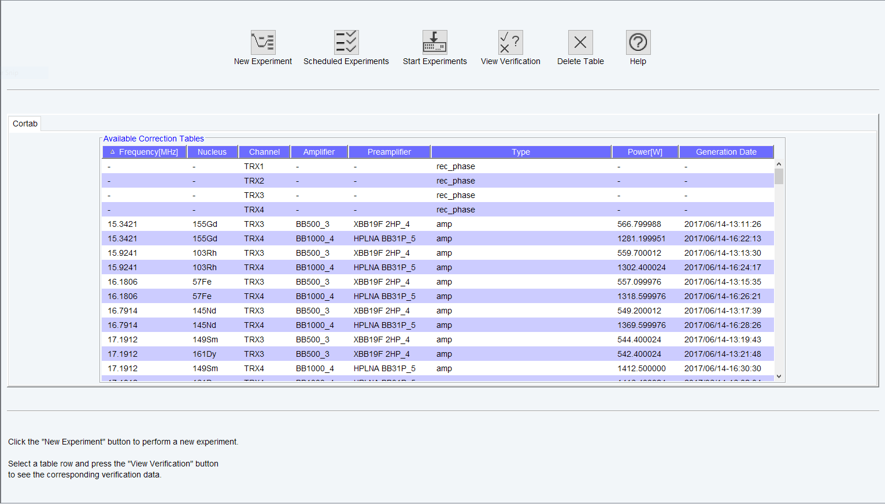
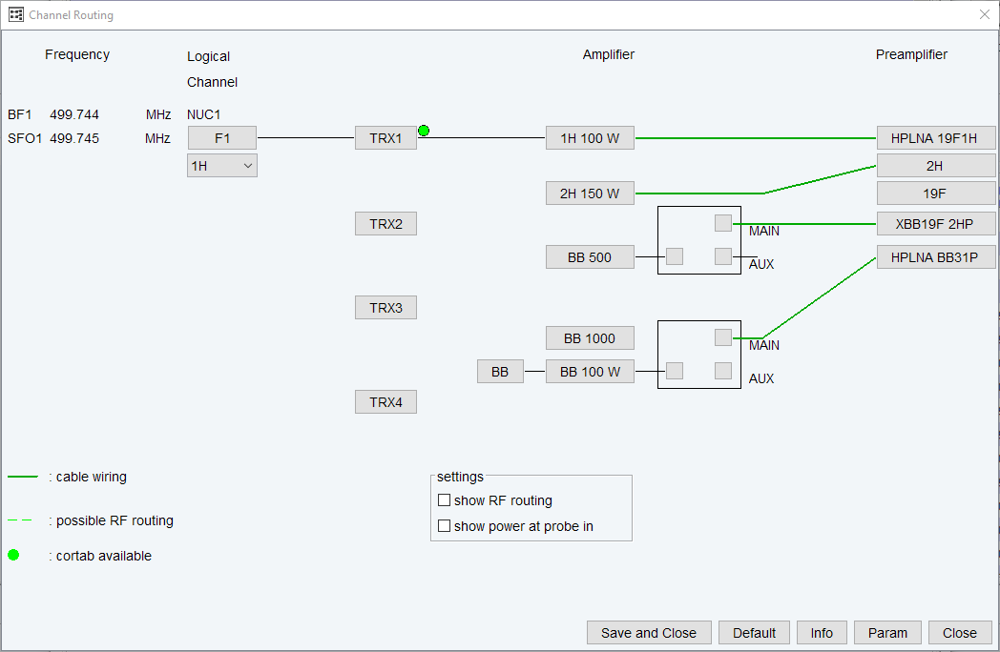
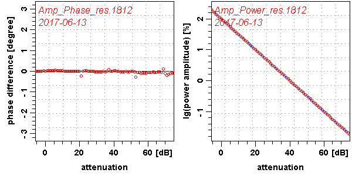

The command cortab opens a window from which amplifier and receiver correction tables for acquisition can be created (see the next figure).
Cortab Main Window
Before this window is opened, you are prompted for the NMR Administration password. The correction tables are used to correct the non-linearity of the pulse power level versus the pulse length, and also to cancel out the influence of the receiver gain on the phase of the resulting spectrum. The amplifier linearization is performed in a range from -6 to above 75 dB and involves both amplitude linearization and phase correction, whereas the receiver phase correction is performed in a receiver gain range from 0.25 to above 1000. For the amplifier linearization, it is required that the amplifier output is connected to an external attenuator (the Cortab Box) which, in turn, is connected to the receiver input. The Cortab program will inform you how to connect the cables. The result of an amplifier linearization is a correction table which is a list of correction values for the pulse amplitudes and phase values. It also contains a check sum which makes it possible to detect whether the file has been changed in any way other than by Cortab.
An example of a correction table is shown in the next table.
Correction Table
AMP_POWER
# power
in dB correction in %
-6.000
0.000
-5.000
-32.644
-4.000
-38.510
-3.000
-37.361
-2.000
-35.032
-1.000
-31.672
0.000
-29.128
1.000
-24.939
2.000
-22.977
.. ..
72.000
-0.008
AMP_PHASE
# power in dB correction in degree
-6.000
0.000
-5.000
-0.636
-4.000
0.622
.. ..
72.000
4.323
# real probe input power in [W] (at -6dB)
AMP_VALUE
60.000000
0.00
# NAME_OF_TABLE:
amp2_1H_2
# DATE_OF_ORIGIN:
2010/01/05-14:23:22.356
##END
# hash MD5: 99 A6 79 CA 61 B1 75 1D 2E D1 6C 79 84 FD 08 2F
Once a correction table exists for a specific nucleus and routing, it is automatically used by acquisition commands like zg (this can be verified in the edasp window of the acquisition data set by a green dot, shown in the next figure.

If you want to check the accuracy of the amplifier linearization, Cortab allows you to do that by running a so called verification test. This test is always performed after the linearization procedure but can also be done in a separate experiment.
The receiver phase linearization ("REC Phase Linearization") is independent and may be performed even if other correction tables already exist. It creates an additional table where theoretical and experimentally determined receiver gain values are listed (rec<x>_calibration.txt).
Amplifier linearization can be performed in two possible ways:
For the linearization the amplifier output is connected to the HPPR preamplifier (as in an NMR experiment) and the preamplifier output is connected to the Cortab Box.
The signal path including the preamplifier is used for the linearization procedure because it is a better simulation of the NMR experiment.
The Cortab window allows you to set up the linearization experiments for various nuclei, perform these experiments and view the results. Correction tables that already exist are displayed in a list ('Available Correction Tables'). The list also contains a key word ('amp', ’pow’ or 'rec') for each correction table, indicating whether the respective table belongs to an amplifier (amp) or a Receiver (rec). In case of an amplifier table the respective maximum amplifier output power (measured at the input of the probe) is also displayed. The ’pow’ key does not represent a correction table but indicates that merely a maximum output power value is defined for a certain routing without the existence of a correction table. If an amplifier table is generated for the respective routing, ’pow’ will be replaced by ’amp’. In the reverse case, if an amplifier table is deleted, ’amp’ will be replaced by ’pow’ provided that the amplifier table contains a valid output power value.
A regular Cortab session involves the steps listed below. Each step is specified by the corresponding button in the main Cortab window.
New Experiment
To start a new experiment the Power Check (POWCHCK) must be deactivated. Clicking this button opens a dialog box where you can define one or more Cortab experiments. Cortab experiments should be defined for each nucleus and routing that you intend to use in your NMR measurements, an exception being the Receiver Phase Linearization which is frequency independent and needs to be performed only for one single (arbitrarily chosen) nucleus.
The following functions are available:
BLA Power Definition without measurement (this generates an ’pow’table)
BLA Verification
REC Phase Linearization + Verification (this generates a ’rec’ table)
REC Phase Verification
In case a Cortab box is installed some further experiments are possible (see description of Cortab box features below).
BLA and REC experiments must be executed in two separate series because they require different hardware connections. First you must set up one series for the REC functions and execute this series (see Start Experiments below). Then you can set up and execute a second series for the amplifier linearization.
NOTE
Please note that the Cortab correction is mainly determined by the BLA linearization (see the Correction Table). This improves the quality of the resulting correction tables. The verification procedure is optional. It allows you to check the quality of the respective linearization results. It simply repeats the linearization but does not create a correction table. Instead, the existing correction table is used and the resulting amplitude and phase values are stored together with the calculated 'ideal' values in the verification files (see View Verification below). Thus, the verification files are directly correlated with the quality of the correction tables used.
Note that you can also run a verification procedure without doing a linearization first. This can be useful to compare the corrected with the uncorrected amplifier characteristics.
New Experiment => Select
Opens the routing table (like edasp) where you can determine the appropriate hardware routing for the chosen experiment. In case of a REC phase correction, however, the complete routing is determined by the software and no user interaction is necessary. After clicking the SAVE' button, the selected experiment (function) is added to the scheduled series. Instructions are displayed regarding the required hardware connections. Carefully follow the outlined instructions (e.g. to find the preamplifier which must not be used) to prevent damaging the hardware units of the spectrometer. In one Cortab series, you can add:
experiments for various nuclei
one nucleus with various routings
linearization and verification
You cannot, however, set an REC correction and a BLA linearization in one series because they require different hardware connections. After having scheduled the experiment, you are prompted for the maximum amplifier output power. This value corresponds to the power (in Watts) measured at the output of the respective HPPR preamplifier module (i.e. at the input of the probe) when you are pulsing with maximum power and using the routing you have already specified. If this power is already known by the system, it will be displayed, otherwise zero is shown. A valid output value is crucial for any kind of output power limitation (e.g. to reduce the possibility of probe damage) of the acquisition software.
However, if the respective power value is not known, you can either use zero (ignoring the power limitation possibilities of the acquisition software) or measure it with a wattmeter. In the following dialog window (Quick Experiment Setup) you will be able to (optionally) select a variable number of additional nuclei (together with their amplifier output power, as mentioned above) that are to be linearized with the same routing as the experiment you have already determined. This saves time because you only need to set up the routing table once, even if you want to generate a linearization table for multiple nuclei. The nuclei are selected by applying a user defined search pattern using the tokens ',' (separator) and '-' (nucleus range); for example, the search pattern “1H, 31P-29Si” would select both 1H and all the nuclei in the frequency range between 31P and 29Si. The system automatically stores the last ten search patterns so that they can be reused for further setups (e.g. with a different routing). It is also possible to edit the search patterns by editing the respective file quick_exp_setup.txt in the cortab/etc directory.
New Experiment => Finish
Closes the dialog box and returns to the main Cortab window
Start Experiments
Clicking this button executes all experiments in the currently scheduled series. They are performed in the order in which they appear in the list. If a correction table already exists for the current experiment, it is renamed by appending the current date to its name. Its file will be overwritten if a further experiment with the identical setting is started at the same date. Please note that you must, temporarily, switch off the peak power limitation in order to run Cortab. To do that, run cf deactivating POWCHK. After Cortab has finished, run cf again activating POWCHK. At the beginning of the linearization, you may be prompted for the total external attenuation used. Cortab uses this value to generate scaled correction tables.
Each linearization experiment involves the following steps:
A receiver gain test
This determines the optimum receiver gain for the current experiment. If this is successful, the experiment continues with the next step. If this is not successful, the experiment aborts and an information window will appear telling what to do. Just follow the instructions.
The actual Cortab experiment, for example the BLA amplifier linearization.
In principle, you are ready now. The correction table has been created and it will automatically be used by the acquisition. If, however, you want to check the Cortab result, you can do that with the View Verification button (or - for a quick preview - by simply moving the mouse over the respective table entry in the Cortab Main Window), or simply double-click on an entry of the 'Available Correction Tables' list as described below.
View Verification
This button is only active when an entry is selected in the Available Correction Tables list of the Cortab window. Clicking this button (or double-clicking a list element) will then open a window where the results of the selected experiment are shown. The window consists of the following fields:
Date of the experiments
A list of dates at which Cortab experiments were performed.
Name of the experiments
When a date is selected, a list of result filenames created at that date is displayed. The respective file extensions denote the creation time of each test. For example:
Amp_Power_res<1048>
Amp_Phase_res<1048>
When you click an entry, the contents of the corresponding file are shown. Note that files like Amp_Power_res do not contain the actual correction values but rather the theoretical “perfect” values and the experimental values acquired on the base of the existing correction table. The smaller the difference between theoretical and experimental values, the better is the corresponding correction table. Therefore, the result files contain two simple statistical key values which make it easier to estimate the overall quality of the correction file (average deviation and standard deviation from the theoretical values). The smaller these values are, the better is the correction table used for the verification.
NOTE
Please note that verification files can be deleted to save disk space without affecting the correction tables they correspond to.
A data field where the contents of the selected file are displayed.
Furthermore, the following push buttons are available:
View Graph
Opens a window with graphical and printable representation of the Cortab result.

OK
Closes the View Graph window and returns to the main Cortab window.
Scheduled Experiments
Clicking this button opens a dialog box where the currently scheduled experiments are shown. The dialog box contains the following buttons:
Remove All : removes all experiments from the scheduled list.
Remove : removes the selected experiment from the list.
OK : exits the dialog box and returns to the main Cortab window.
Cortab experiments use two spectrometer channels simultaneously:
The pulse channel: selected by the user in the Cortab New Experiment, i.e. the channel that is routed to the amplifier) that is being corrected.
The observe channel: automatically selected by the Cortab program. If the pulse channel is f1, the observe channel is f2. Otherwise the observe channel is f1.
USING A CORTAB BOX
If a Cortab box is installed some further experiments are available:
BLA Linearization + Verification + Power Scaling (generates the ’amp’ table and measures the maximum output power of the amplifier).
BLA Power Measurement (measures the maximum output power of the amplifier).
Additionally, in the Cortab box Routing Scheme in the New Experiment Window (see the next figure), it has to be determined which amplifier is connected to which input of the Cortab box. After that it is possible to set up and schedule experiments for all amplifiers selected in the Cortab box Routing Scheme since the Cortab box will switch the amplifier outputs automatically for each experiment.